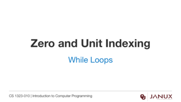
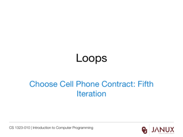
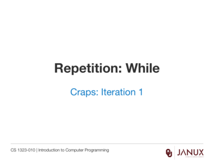

Repetition: While Statements
This section covers while statements.
Introduction to repetition using while loops.
Java code developed in the videos from this lesson.
Lecture presentation
Lecture presentation
Lecture presentation


